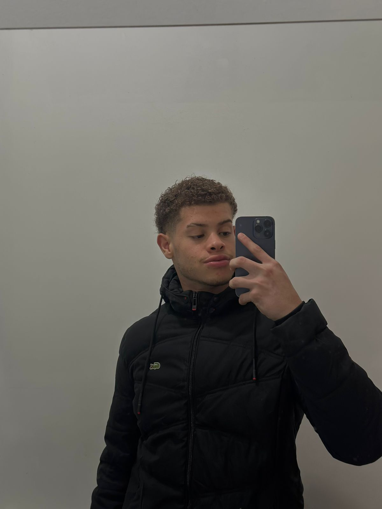

01⌘
Jogos eletrônicos
Jogos competitivos e de estratégia me interessam pela combinação de raciocínio rápido, trabalho em equipe e tomada de decisões.
ESTRATÉGIA & DIVERSÃOSITE PESSOAL ALFENAS, MG
Olá! Seja bem-vindo(a).
Estudante de Ciência da Computação na UNIFAL-MG, apaixonado por aprender, explorar a tecnologia e entender como boas ideias se transformam em soluções reais.

01 / SOBRE MIM
Meu nome é Danilo Carvalho Firme. Sou de Alfenas, Minas Gerais, e curso Ciência da Computação na Universidade Federal de Alfenas (UNIFAL-MG).
Gosto de entender como a tecnologia funciona e de conhecer diferentes maneiras de resolver problemas. Na faculdade, venho construindo uma base em programação, estruturas de dados, modelagem e desenvolvimento de sistemas.
Tenho interesse especial em Análise e Projeto de Sistemas: desde identificar necessidades e organizar requisitos até criar modelos que ajudem a desenvolver softwares claros, úteis e bem estruturados.
02 / ALÉM DA FACULDADE
Entre estudos e novas descobertas, são estes alguns dos assuntos que despertam minha curiosidade.
Jogos competitivos e de estratégia me interessam pela combinação de raciocínio rápido, trabalho em equipe e tomada de decisões.
ESTRATÉGIA & DIVERSÃOExplorar ferramentas como o Blender é uma maneira de praticar criatividade, visualização espacial e construção de objetos digitais.
ARTE & TECNOLOGIAAcompanhar ferramentas, linguagens e tendências me ajuda a compreender as possibilidades e transformações do mundo digital.
EXPLORAR & DESCOBRIRGosto de observar como um visual organizado e uma boa experiência de uso podem tornar a tecnologia mais acessível.
CRIATIVIDADE & USABILIDADESeja com cursos, experimentos ou exercícios práticos, procuro ampliar minhas habilidades e transformar curiosidade em conhecimento.
EVOLUÇÃO CONTÍNUA03 / MEU UNIVERSO ACADÊMICO
O curso combina fundamentos teóricos e atividades práticas para compreender, criar e evoluir sistemas computacionais.
Requisitos, casos de uso, UML, modelagem orientada a objetos e princípios de design.
Java, Python, C/C++, desenvolvimento web com HTML, CSS e JavaScript.
Git, GitHub, Jira e Penpot, usados para versionar, planejar e prototipar soluções.
04 / FORMAÇÃO ACADÊMICA
Cada disciplina amplia minha maneira de pensar e me aproxima do objetivo de atuar com desenvolvimento e projeto de software.
Universidade Federal de Alfenas (UNIFAL-MG)
05 / CONTATO
Gosto de conversar sobre tecnologia, estudos e desenvolvimento de software. Me encontre por estes canais: